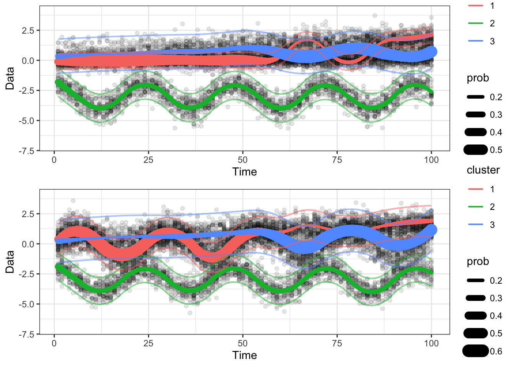

12 Testing the flowtrend method
We’re going to assume the flowtrend() function has been built, and test it
now.
12.1 1d example
Generate data.
set.seed(100)
dt <- gendat_1d(100, rep(100, 100))
dt_model <- gendat_1d(100, rep(100, 100), return_model = TRUE)
ylist = dt %>% dt2ylist()
x = dt %>% pull(time) %>% unique()
plot_1d(ylist)Next, we fit the model.
set.seed(18)
obj <- flowtrend(ylist = ylist,
x = x,
maxdev = 5,
numclust = 3,
l = 2,
l_prob = 2,
lambda = .1,
lambda_prob = .005,
admm_local_adapt = TRUE,
nrestart = 5)
## Also reorder the cluster labels of the truth, to match the fitted model.
ord = obj$mn[,1,] %>% colSums() %>% order(decreasing=TRUE)
lookup <- setNames(c(1:obj$numclust), ord)
dt_model$cluster = lookup[as.numeric(dt_model$cluster)] %>% as.factor()
## Reorder the cluster lables of the fitted model.
obj = reorder_clust(obj)The data and estimated model are shown here. The dashed lines are the true means.
plot_1d(ylist = ylist, obj = obj, x = x, add_point = FALSE) +
geom_line(aes(x = time, y = mean, group = cluster),
data = dt_model,## %>% subset(time %ni% held_out),
linetype = "dashed", size=2, alpha = .7)The estimated probabilities are shown here.
plot_prob(obj=obj, x=x) +
geom_line(aes(x = time, y = prob, group = cluster, color = cluster),
data = dt_model, linetype = "dashed") +
facet_wrap(~cluster)12.2 Testing monotonicity of objective values
The objective value (that is, the penalized log likelihood) should be monotone decreasing across EM algorithm iterations.
testthat::test_that("Objective value decreases over EM iterations.",{
for(iseed in 1:5){
print(iseed)
## Generate synthetic data
set.seed(iseed*100)
dt <- gendat_1d(100, rep(10, 100))
dt_model <- gendat_1d(100, rep(10, 100), return_model = TRUE)
ylist = dt %>% dt2ylist()
x = dt %>% pull(time) %>% unique()
## Fit model
obj <- flowtrend_once(ylist = ylist,
x = x,
maxdev = 5,
numclust = 3,
lambda = 0.02,
l = 1,
l_prob = 2,
lambda_prob = 0.05)
## Test objective monotonicity
niter_end = length(obj$objective)
testthat::expect_true(all(diff(obj$objective) < 1E-4))
## Make a plot
g = ggplot(tibble(iter=1:niter_end, objective=obj$objectives)) +
geom_point(aes(x=iter, y=objective)) +
geom_line(aes(x=iter, y=objective)) +
ggtitle(paste0("Seed=", iseed*100))
print(g)
}
})## [1] 1
## [1] 2
## [1] 3
## [1] 4
## [1] 5
## Test passed12.3 2d example
Next, we try out flowtrend on a synthetic 2d data example.
set.seed(100)
TT = 100
dt <- gendat_2d(TT, rep(100, times = TT))
x = 1:TT
set.seed(10)
obj <- flowtrend_once(ylist = dt$ylist,
x = x,
maxdev = 3,
numclust = 3,
l = 2,
l_prob = 2,
lambda = 0.01,
lambda_prob = .01,
rho_init = 0.01)
g1 = plot_1d(ylist = dt$ylist, obj = obj, idim = 2) + ylim(c(-7, 4))
g2 = plot_1d(ylist = dt$ylist, obj = obj, idim = 1) + ylim(c(-7, 4))
do.call(ggpubr::ggarrange, c(list(g1, g2), ncol=1, nrow=2))
The plot above shows 1d projections in the two dimensions of the response data.
And the plot below are some snapshots in time \(t\).
timelist = c(10, 20, 30, 40, 60, 80)
plist = lapply(timelist, function(tt){
plot_2d(dt$ylist, obj, tt = tt) + coord_fixed() + ylim(-6, 3) + xlim(-6, 3)
})
do.call(ggpubr::ggarrange, c(plist, ncol=3, nrow=2))## Coordinate system already present. Adding new coordinate system, which will replace the existing one.
## Coordinate system already present. Adding new coordinate system, which will replace the existing one.
## Coordinate system already present. Adding new coordinate system, which will replace the existing one.
## Coordinate system already present. Adding new coordinate system, which will replace the existing one.
## Coordinate system already present. Adding new coordinate system, which will replace the existing one.
## Coordinate system already present. Adding new coordinate system, which will replace the existing one.
## Coordinate system already present. Adding new coordinate system, which will replace the existing one.
## Coordinate system already present. Adding new coordinate system, which will replace the existing one.
## Coordinate system already present. Adding new coordinate system, which will replace the existing one.
## Coordinate system already present. Adding new coordinate system, which will replace the existing one.
## Coordinate system already present. Adding new coordinate system, which will replace the existing one.
## Coordinate system already present. Adding new coordinate system, which will replace the existing one.## Warning: Removed 1 rows containing missing values (`geom_point()`).
12.4 Working with “binned” dataset
Recall that “binning” means we will use binned frequency histogram estimates of the original particle-level dataset; this is useful when there are many particles.
## library(flowmix)
set.seed(10232)
TT = 100
dt <- gendat_2d(TT, rep(100, times = TT))
manual_grid = flowmix::make_grid(dt$ylist, gridsize = 40)
binres = flowmix::bin_many_cytograms(dt$ylist, manual.grid = manual_grid)
set.seed(100)
obj = flowtrend(ylist = binres$ybin_list,
countslist = binres$counts_list,
maxdev = 5,
numclust = 3,
l = 2,
l_prob = 2,
lambda = .01,
lambda_prob = .005,
rho_init = .01,
nrestart = 1)
obj$objectives %>% plot(type='l')
g1 = plot_1d(ylist = dt$ylist, obj = obj, idim = 2) + ylim(c(-7, 4))
g2 = plot_1d(ylist = dt$ylist, obj = obj, idim = 1) + ylim(c(-7, 4))
do.call(ggpubr::ggarrange, c(list(g1, g2), ncol=1, nrow=2))## Warning: replacing previous import 'RcppArmadillo::fastLmPure' by 'RcppEigen::fastLmPure' when loading 'flowmix'## Warning: replacing previous import 'RcppArmadillo::fastLm' by 'RcppEigen::fastLm' when loading 'flowmix'

12.5 Unevenly spaced inputs (x)
Let’s try the EM algorithm out with unevenly spaced inputs.
set.seed(100)
dt <- gendat_1d(TT=100, rep(100, times=100))
dt_model <- gendat_1d(TT=100, rep(100, times=100), return_model = TRUE)
ylist_orig = dt %>% dt2ylist()
ind_rm_list = list(seq(from=10, to=100, by=10),
ind_rm = 30:50)
for(ind_rm in ind_rm_list){
x = (1:100)[-ind_rm]
ylist = ylist_orig[x]
set.seed(100)
obj <- flowtrend_once(ylist = ylist,
x = x,
maxdev = 100,
numclust = 3,
l = 2,
l_prob = 2,
lambda = 0.1,
lambda_prob = 0.1, ##
verbose = TRUE,
admm_local_adapt = TRUE,
rho_init = 0.01)
obj$objectives %>% plot(type='o', ylab = "EM objectives")
plot_1d(obj = obj, ylist = ylist, x = x)
}##
EM iterations. 1 out of 999 with lapsed time 0 seconds and remaining time 0 seconds and will finish at 2024-01-30 22:02:09
EM iterations. 2 out of 999 with lapsed time 0 seconds and remaining time 0 seconds and will finish at 2024-01-30 22:02:09
EM iterations. 3 out of 999 with lapsed time 0 seconds and remaining time 0 seconds and will finish at 2024-01-30 22:02:09
EM iterations. 4 out of 999 with lapsed time 1 seconds and remaining time 249 seconds and will finish at 2024-01-30 22:06:19
EM iterations. 5 out of 999 with lapsed time 1 seconds and remaining time 199 seconds and will finish at 2024-01-30 22:05:29
EM iterations. 6 out of 999 with lapsed time 1 seconds and remaining time 166 seconds and will finish at 2024-01-30 22:04:56
EM iterations. 7 out of 999 with lapsed time 1 seconds and remaining time 142 seconds and will finish at 2024-01-30 22:04:33
EM iterations. 8 out of 999 with lapsed time 2 seconds and remaining time 248 seconds and will finish at 2024-01-30 22:06:19
EM iterations. 9 out of 999 with lapsed time 2 seconds and remaining time 220 seconds and will finish at 2024-01-30 22:05:51
EM iterations. 10 out of 999 with lapsed time 2 seconds and remaining time 198 seconds and will finish at 2024-01-30 22:05:30
EM iterations. 11 out of 999 with lapsed time 3 seconds and remaining time 269 seconds and will finish at 2024-01-30 22:06:41
EM iterations. 12 out of 999 with lapsed time 3 seconds and remaining time 247 seconds and will finish at 2024-01-30 22:06:19
EM iterations. 13 out of 999 with lapsed time 3 seconds and remaining time 228 seconds and will finish at 2024-01-30 22:06:00
EM iterations. 14 out of 999 with lapsed time 4 seconds and remaining time 281 seconds and will finish at 2024-01-30 22:06:54
EM iterations. 15 out of 999 with lapsed time 4 seconds and remaining time 262 seconds and will finish at 2024-01-30 22:06:35
EM iterations. 16 out of 999 with lapsed time 4 seconds and remaining time 246 seconds and will finish at 2024-01-30 22:06:19
EM iterations. 17 out of 999 with lapsed time 4 seconds and remaining time 231 seconds and will finish at 2024-01-30 22:06:04
EM iterations. 18 out of 999 with lapsed time 5 seconds and remaining time 272 seconds and will finish at 2024-01-30 22:06:46
EM iterations. 19 out of 999 with lapsed time 5 seconds and remaining time 258 seconds and will finish at 2024-01-30 22:06:32
EM iterations. 20 out of 999 with lapsed time 5 seconds and remaining time 245 seconds and will finish at 2024-01-30 22:06:19
EM iterations. 21 out of 999 with lapsed time 5 seconds and remaining time 233 seconds and will finish at 2024-01-30 22:06:07
EM iterations. 22 out of 999 with lapsed time 6 seconds and remaining time 266 seconds and will finish at 2024-01-30 22:06:41
EM iterations. 23 out of 999 with lapsed time 6 seconds and remaining time 255 seconds and will finish at 2024-01-30 22:06:30
EM iterations. 24 out of 999 with lapsed time 6 seconds and remaining time 244 seconds and will finish at 2024-01-30 22:06:19
EM iterations. 25 out of 999 with lapsed time 6 seconds and remaining time 234 seconds and will finish at 2024-01-30 22:06:09
EM iterations. 26 out of 999 with lapsed time 6 seconds and remaining time 225 seconds and will finish at 2024-01-30 22:06:00
EM iterations. 27 out of 999 with lapsed time 7 seconds and remaining time 252 seconds and will finish at 2024-01-30 22:06:28
EM iterations. 28 out of 999 with lapsed time 7 seconds and remaining time 243 seconds and will finish at 2024-01-30 22:06:19
EM iterations. 29 out of 999 with lapsed time 7 seconds and remaining time 234 seconds and will finish at 2024-01-30 22:06:10
EM iterations. 30 out of 999 with lapsed time 7 seconds and remaining time 226 seconds and will finish at 2024-01-30 22:06:02
EM iterations. 31 out of 999 with lapsed time 7 seconds and remaining time 219 seconds and will finish at 2024-01-30 22:05:55
EM iterations. 32 out of 999 with lapsed time 8 seconds and remaining time 242 seconds and will finish at 2024-01-30 22:06:19
EM iterations. 33 out of 999 with lapsed time 8 seconds and remaining time 234 seconds and will finish at 2024-01-30 22:06:11
EM iterations. 34 out of 999 with lapsed time 8 seconds and remaining time 227 seconds and will finish at 2024-01-30 22:06:04
EM iterations. 35 out of 999 with lapsed time 8 seconds and remaining time 220 seconds and will finish at 2024-01-30 22:05:57
EM iterations. 36 out of 999 with lapsed time 8 seconds and remaining time 214 seconds and will finish at 2024-01-30 22:05:51
EM iterations. 37 out of 999 with lapsed time 9 seconds and remaining time 234 seconds and will finish at 2024-01-30 22:06:12
##
EM iterations. 1 out of 999 with lapsed time 0 seconds and remaining time 0 seconds and will finish at 2024-01-30 22:02:18
EM iterations. 2 out of 999 with lapsed time 0 seconds and remaining time 0 seconds and will finish at 2024-01-30 22:02:18
EM iterations. 3 out of 999 with lapsed time 1 seconds and remaining time 332 seconds and will finish at 2024-01-30 22:07:51
EM iterations. 4 out of 999 with lapsed time 1 seconds and remaining time 249 seconds and will finish at 2024-01-30 22:06:28
EM iterations. 5 out of 999 with lapsed time 1 seconds and remaining time 199 seconds and will finish at 2024-01-30 22:05:38
EM iterations. 6 out of 999 with lapsed time 1 seconds and remaining time 166 seconds and will finish at 2024-01-30 22:05:05
EM iterations. 7 out of 999 with lapsed time 1 seconds and remaining time 142 seconds and will finish at 2024-01-30 22:04:41
EM iterations. 8 out of 999 with lapsed time 2 seconds and remaining time 248 seconds and will finish at 2024-01-30 22:06:28
EM iterations. 9 out of 999 with lapsed time 2 seconds and remaining time 220 seconds and will finish at 2024-01-30 22:06:00
EM iterations. 10 out of 999 with lapsed time 2 seconds and remaining time 198 seconds and will finish at 2024-01-30 22:05:38
EM iterations. 11 out of 999 with lapsed time 2 seconds and remaining time 180 seconds and will finish at 2024-01-30 22:05:20
EM iterations. 12 out of 999 with lapsed time 2 seconds and remaining time 164 seconds and will finish at 2024-01-30 22:05:04
EM iterations. 13 out of 999 with lapsed time 2 seconds and remaining time 152 seconds and will finish at 2024-01-30 22:04:53
EM iterations. 14 out of 999 with lapsed time 3 seconds and remaining time 211 seconds and will finish at 2024-01-30 22:05:52
EM iterations. 15 out of 999 with lapsed time 3 seconds and remaining time 197 seconds and will finish at 2024-01-30 22:05:38
EM iterations. 16 out of 999 with lapsed time 3 seconds and remaining time 184 seconds and will finish at 2024-01-30 22:05:25
EM iterations. 17 out of 999 with lapsed time 3 seconds and remaining time 173 seconds and will finish at 2024-01-30 22:05:14
EM iterations. 18 out of 999 with lapsed time 4 seconds and remaining time 218 seconds and will finish at 2024-01-30 22:06:00
EM iterations. 19 out of 999 with lapsed time 4 seconds and remaining time 206 seconds and will finish at 2024-01-30 22:05:48
EM iterations. 20 out of 999 with lapsed time 4 seconds and remaining time 196 seconds and will finish at 2024-01-30 22:05:38
EM iterations. 21 out of 999 with lapsed time 4 seconds and remaining time 186 seconds and will finish at 2024-01-30 22:05:28
EM iterations. 22 out of 999 with lapsed time 4 seconds and remaining time 178 seconds and will finish at 2024-01-30 22:05:21
EM iterations. 23 out of 999 with lapsed time 5 seconds and remaining time 212 seconds and will finish at 2024-01-30 22:05:55
EM iterations. 24 out of 999 with lapsed time 5 seconds and remaining time 203 seconds and will finish at 2024-01-30 22:05:46